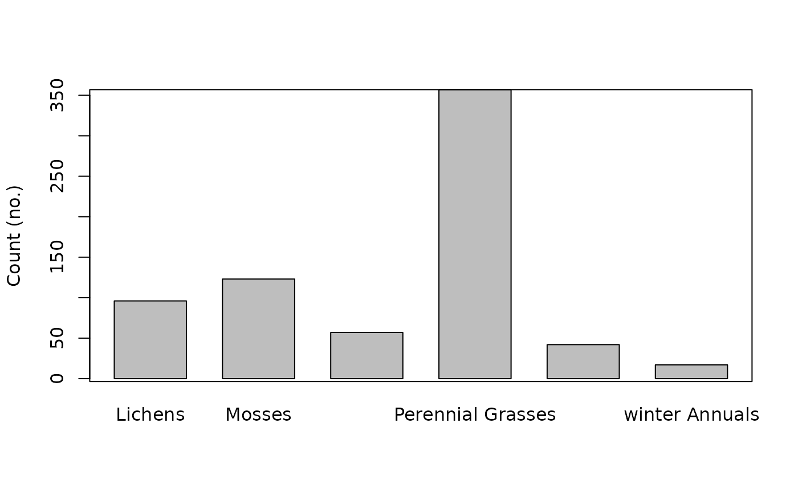

The package contains two real transects with data sampled in open
sand grassland in Hungary (Bartha et al. 2008). These real transect data
sets were from Bartha et al.’s (2008) long-term study on the effect
of climate change on the interannual variability of grassland communities.
The transect data sets represent: (1) the spatial pattern data of frequent
species (species with more than 25 presences along the transect)
selected as a threshold from standard textbooks; tran_grass_s), and
(2) the spatial pattern data of plant functional types (PFTs) (in this case
data of species which belong to the same functional groups were merged;
tran_grass_t). These data represent the same transect and same
community; however, for merging species, all data were used (i.e. the data
of rare species were also considered within the particular PFT). For
simplicity, we have only selected a 25m example with a very typical pattern;
this extent (transect length) is already representative of the community
pattern.
Format
A data frame with 713 species observations on the following two variables.
- X
X coordinates
- Species
Species. Note that for the Transect grassland trait data, 'Species' referes to plant functional type.
References
Bartha, S. (2008). Will interannual variability in sand grassland communities increase with climate change?. Community Ecol., 9: 13–21.
Examples
data(tran_grass_t)
str(tran_grass_t)
#> 'data.frame': 692 obs. of 2 variables:
#> $ X : Factor w/ 441 levels "1","2","3","4",..: 1 1 2 2 2 2 3 3 3 4 ...
#> $ Species: Factor w/ 6 levels "Lichens","Mosses",..: 4 1 4 3 2 1 4 2 1 4 ...
barplot(table(tran_grass_t$Species),ylab = "Count (no.)",
space=0.5);box()
